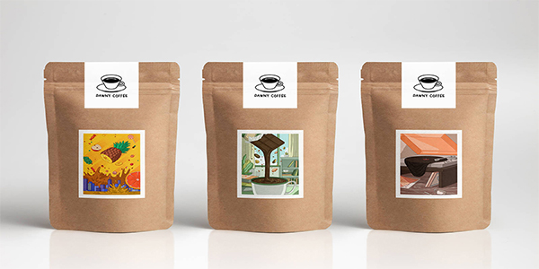

산업용지
재활용 고지와 산림인증을 취득한 원료만을 사용하여 만든 친환경 산업용지입니다. 주로 식품 및 제품 패키지 등 다양한 물건의 포장재로 사용됩니다
종류
-
Hi-Q SC
특징 Hi-Q SC는 재생펄프(고지)를 주원료로 생산한 친환경제품입니다. 우수한 인쇄적성과 높은 강도를 가지고 있어 제품 가치를 높일 수 있고, 다양한 제품의 포장재로 사용할 수 있습니다. 용도 가공식품, 생활용품, 화장품/향수, 의류/잡화 평량 180g, 240g, -
Hi-Q ACB
특징 Hi-Q ACB는 과일과 채소 등 농산물 박스에 특화된 Sheet 타입의 두껍고 강한 백판지 입니다. 용도 농산물 포장재 평량 220g -
Hi-Q FSB
특징 HI-Q FSB는 과일, 채소 등 농산물에 특화된 롤(Roll) 타입의 제품입니다. 프리프린팅 등 높은 강도를 요구하는 공정에 사용하기에 적합 합니다. 용도 농산물 포장재 평량 220g -
Hi-Q IV
특징 Hi-Q IV는 표면과 후면층에 표백 펄프를 부착하고 중간층에 재생펄프(고지)를 사용하여 만들어진 백색 후면을 가진 친환경 제품입니다. 제과, 의약품, 의류 등의 고급 포장재, 일반 화일용 표지 등에 사용되는 제품입니다. 용도 의류/잡화 , 가공식품, 화장품/향수, 제약 등 평량 280g, 300g, 350g -
Hi-Q AB 플러스
특징 Hi-Q AB 플러스는 100% 천연 펄프를 사용한 무형광 제품입니다. 우수한 인쇄적성과 높은 강도, 고급스러운 표면을 가지고 있어 화장품, 의약품, 고급 포장재나 식품 포장재로 사용됩니다. 용도 화장품과 의약품 등 고급포장재 및 식품용기 등 평량 210g, 230g, 260g -
라벨지
특징 높은 내알칼리성 및 내수성으로 수분에 대한 저항성 및 습윤강도가 강하며, 평활도와 인쇄적성이 우수하여, 고급스러운 라벨외관품질, 뛰어난 세병적성을 자랑하는 제품입니다. 용도 주류 병라벨 평량 70g, 80g -
합지벽지원지
특징 합지벽지원지는 두장의 원지를 합지하여 인쇄 및 엠보싱 처리시킨 합지벽지의 원지로 인쇄품질 뿐만 아니라 도배시 통풍성 또한 좋은 친환경적인 제품입니다. 용도 합지벽지의 원지 평량 100g -
펄지
특징 부드러운 표면과 진주빛의 고급스러운 색감, 은은한 광택효과로 모든 이미지에 독특한 감성을 느낄수 있도록 설계된 종이입니다 용도 고급 카달로그, 초청장 및 청첩장 내지, 명함 평량 83g, 90g, 105g -
감열지Green
특징 비스페놀A가 들어있지 않아 환경 호르몬으로부터 안전하고, 발색도, 보존성, 인쇄적성 등 우수한 품질을 자랑합니다. 용도 POS 평량 44,48,55 -
감열지Green HB
특징 기존제품대비 두께를 향상하여 벌크함을 자랑하는 감열지입니다 용도 POS 평량 65